By Elizabeth Dunlop Richter
“…we mutually pledge to each other our Lives, our Fortunes and our sacred Honor.”
The Declaration of Independence
With these words, the founding fathers concluded the Declaration of Independence in 1776. There was nowhere in Chicago where nurturing this sense of community and connection was more on display on the 4th of July than the Chicago History Museum.
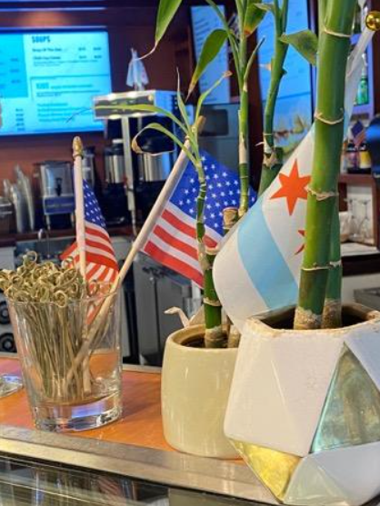
From 9:30 a.m. to 4:00 p.m. the Museum was open, at no cost for Illinois residents, with a full menu of activities from musical performances to an ice cream giveaway and hot dog trivia to opportunities for civic engagement. This new format differed from the weather-dependent previous celebrations on the outdoor plaza with most activities inside. By noon, over 500 visitors had come to the museum to participate, well on the way to a record.
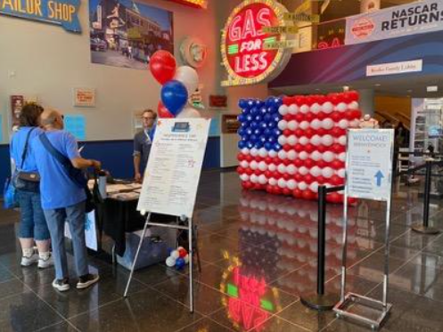
Activities throughout the museum engaged visitors of all ages. Filled with colorful balloons and flags, the museum encouraged visitors “to show their colors” with festive face painting.
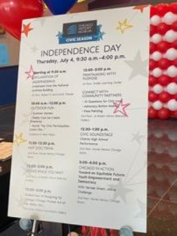
Framed by the stockyard arch in the café, Jonah shows off his forehead fireworks.
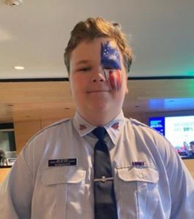
Civil Air Patrol Auxiliary member Rudy Niswander isn’t shy about his patriotism.
Activities offered children as well as adults the ability to take home their own designs. Crowds filled the art tables where, thanks to a clever device, a drawing was quickly encased in a neat round, wearable button.
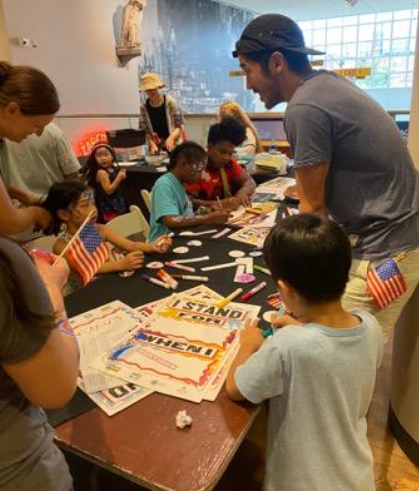
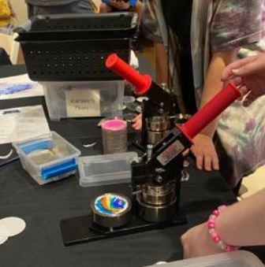
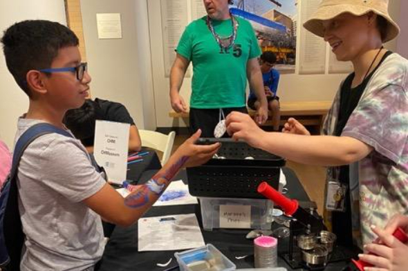
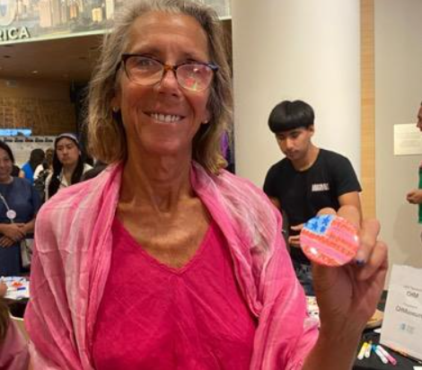
“The best thing about today is — the kids!! Their wonderment and excitement over being in the Museum never fails to thrill me,” said Jill Kirk, president of the museum’s Guild, the auxiliary group that educates its members about Chicago history and raises funds for the museum.
Adults had more ways to engage. Ten questions for Civic Love, provided by the National Public Housing Museum, enabled visitors to share their experiences and see how they compared to others. Questions ranged from a favorite food to changes in one’s neighborhood.
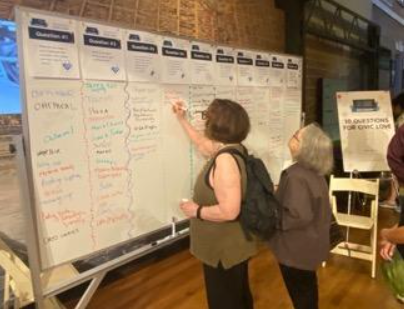
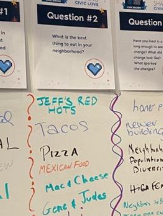
One of the most interesting offerings was Poems While You Wait. A table of writers stood by to create original poems on the fly. One filled in a simple form with one’s name and a topic. A writer took each form and wrote a poem on the subject listed. Charmingly, the poems were written on old fashioned typewriters. No computers in sight.
Museum President and CEO Donald Lassere was enjoying himself as he made the rounds. He stopped to join Chicago History Museum Guild members having lunch on the outdoor terrace. Guild member Lynn Urschel was particularly enthusiastic about the new format. “A splendid celebration and new tradition in honor of our beloved nation’s birthday,” she said.
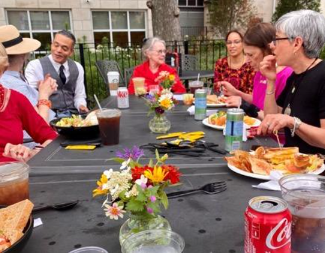
Museum President and CEO Donald Lassere joins Guild members on the terrace.
From the museum’s perspective, the day was a great success. “We had high attendance for the 4th of July activities this year with over 1300 visitors,” said Michael Anderson, vice president of External Engagement and Development. “Our goal was to provide a more personal, hands-on and engaging experience that inspires visitors to participate in civic engagement year-round.”
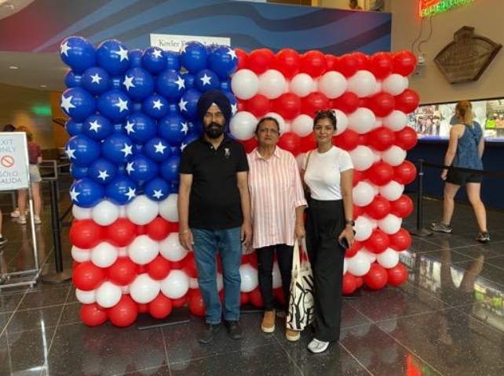
The Fourth of July event was the culminating event of Civic Season, a collaboration of Chicago civic organizations, part of a national network, Made by Us, formed to pool knowledge and create civic participation hubs for young adults. Civic Season in Chicago began with Juneteenth focused on the DuSable Black History Museum. It was clear that the day attracted a wide range of Chicagoans united by their interest in celebrating the importance of democracy and community values.